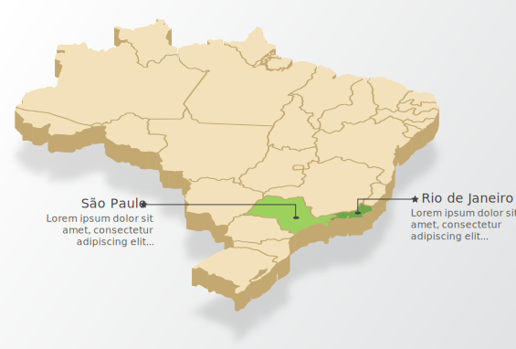

No período colonial, as autoridades ordenavam a quarentena aos navios com o objetivo de impedir que doentes de varíola entrassem no continente, pois poderiam provocar novas epidemias.
Unidade 1
Do Império à primeira República: o surgimento da saúde pública

Aula 1
Um Império de doenças
Navegue nos anos e veja alguns acontecimentos importantes relacionados à Saúde Pública.
1808
A chegada da família real portuguesa ao Brasil em 1808 e a transformação do país em Reino Unido a Portugal inauguraram um período de fortes transformações na antiga Colônia.
Com o novo status do país, surgiu a necessidade de abertura comercial, modernização de algumas áreas – como a produção de manufaturas – e o desenvolvimento dos meios de comunicação, até então reprimidos pelo domínio colonial. Essas mudanças, somadas às urgências políticas do período, fizeram com que o contato com outras nações europeias fosse ampliado, principalmente por causa do comércio de mercadorias e escravos.
1829
Depois da Independência, surgiram as primeiras instituições médicas no país. Em 1829, foi criada a Sociedade de Medicina do Rio de Janeiro, que passou a congregar a elite médica em torno da melhoria das condições de saúde da Corte e do fortalecimento institucional da medicina.
1832
Em 1832, os cursos médicos cirúrgicos existentes na Bahia e no Rio de Janeiro foram transformados em faculdades de medicina e começaram a emitir diplomas para médicos, farmacêuticos e parteiras. Era o início da medicina oficial brasileira.
Ainda nesta unidade aprofundaremos o conhecimento sobre as instituições da Medicina oficial.
1835
A Sociedade de Medicina do Rio de Janeiro foi transformada em Academia Imperial de Medicina em 1835, passando a ser uma instituição oficial, ativa no campo do aconselhamento do Estado em temas de saúde pública.
Os eventos que você viu nessa linha do tempo marcaram os primeiros passos da medicina oficial brasileira. Embora tenham servido de base para a formação das primeiras estruturas de saúde e práticas médicas institucionalizadas, essas iniciativas não conseguiram melhorar as condições de saúde da população.
No Brasil independente surgiam novas instituições e atividades.
Nesse cenário, com novas manufaturas, pequenas fábricas, culturas agrícolas em ascensão como o café e o setor de transporte, começou a demanda pela importação de máquinas, serviços e trabalhadores que passaram a ser indispensáveis para mover a economia agora autônoma.

Nesse período, as áreas urbanas das regiões economicamente mais ativas começaram a atrair trabalhadores e negócios.
Clique nas áreas destacadas do mapa e veja o que ocorreu nessas regiões.

As transformações demográficas e socioeconômicas ocorridas no século XIX trouxeram grandes impactos na área da saúde.
Nessa época, surgiram diversas doenças. A maioria delas estava relacionada à alimentação inadequada e à condição de vida precária, atingindo assim uma grande parte da população.
Saiba Mais
Durante o período colonial e no Império foram as infecções gastrointestinais que mais mataram brasileiros.
Além disso, diversas doenças de caráter transmissível passaram a ser mais frequentes, como por exemplo: a sífilis e a tuberculose.

Vídeo 1 - Rainforests 101 | National Geographic
Fonte: National
Geographic (2019)
Atenção
Apesar da contínua degradação das condições de saúde em virtude do aumento da população, da falta de condições de saneamento e da exploração do trabalho, até meados do século XIX o país esteve distante das epidemias mais violentas que atacavam a Europa.

Existia na época a crença de que o Brasil, pela condição climática ou geográfica, estaria imune às pestes que assolavam a Europa.
Em 1844, José Francisco Xavier Sigaud discordou dessa ideia e afirmou que a inexistência de epidemias importadas no Brasil se devia ao isolamento econômico e cultural imposto pelo estatuto colonial, mas que a chegada delas seria inevitável.
Ele tinha razão nessa afirmativa, pois infelizmente essas epidemias começaram a acontecer regularmente no país.
Varíola
A varíola foi trazida ao Brasil pelos europeus no século XVI, gerando surtos que atingiram diversas cidades, do litoral ao interior.
As primeiras vítimas da doença foram os índios, que não contavam com resistência biológica ao agente patogênico. A doença foi responsável pela redução e mesmo extinção de diversas tribos no país.
Saiba Mais
Em 1938, os viajantes Von Spix e Von Martius, observaram que era difícil encontrar índios com marcas de varíola, não por eles não contraírem a doença, mas porque não sobrevivem a ela.
")
A varíola foi a primeira doença a ser alvo de uma ação pública específica no Brasil.
Navegue nos anos e veja alguns acontecimentos importantes relacionados à Saúde Pública.
1804
Os comerciantes baianos, liderados pelo Marquês de Barbacena, pagaram a ida de escravos à Europa para serem inoculados com a doença.
1808
Com a vinda da Corte, a vacina antivariólica ganhou maior impulso. Acredita-se que isso se deve ao fato de D. João ter perdido dois irmãos e um filho que adoeceram com a varíola.
1811
Em 1811, foi criada a Junta Vacínica da Corte com o objetivo de implantar a vacinação no Brasil.
1831
Em 1831, a Junta Vacínica recebeu um novo nome: Junta Central de Vacinação. Apesar de ter sido criada com o objetivo de ampliar o uso da vacina no Império, a atuação da Junta foi muito restrita, pois existia muita resistência à aplicação da vacina diretamente de uma pessoa a outra.
Atenção
A vacinação foi mais utilizada nos escravos, porque seus senhores estavam preocupados com a manutenção de sua propriedade. A partir de 1887, a vacinação a partir de uma substância vinda de pústulas de animais atingidos por cow-pox chega ao Brasil. Essa nova forma de vacinação amplia o uso dessa forma de prevenção mas também é alvo de grande resistência.
Febre Amarela
A febre amarela surgiu em surtos esparsos ainda no período colonial.
Essa doença chegou ao Brasil no final do século XVII, provavelmente trazida das Antilhas, onde se espalhou desde a época dos Descobrimentos.
Clique nas áreas destacadas do mapa e veja o que ocorreu nessas regiões.
Cólera
Trazida do Sudeste Asiático pelos europeus, a cólera se propagou nas rotas de comércio e pelos deslocamentos populacionais.
A primeira epidemia da doença no Brasil se iniciou na província do Grão-Pará em 1855, mas em pouco tempo a doença atingiu o Nordeste e a capital do Império, deixando um imenso número de mortes.
Saiba Mais
A cólera era bem conhecida pelos médicos europeus em virtude dos problemas que vinha causando em diversos países.
Sua forma de transmissão ainda era ignorada por grande parte da comunidade médica, e foi descoberta somente em 1855 pelo médico inglês John Snow.
Para evitar a propagação da doença era realizado o isolamento dos doentes e quarentena nos navios.
Os enfermos recebiam atendimento nas enfermarias da Santa Casa e em outras instituições filantrópicas.

Cenas trágicas dessa epidemia foram retratadas pelo Visconde de Taunay em sua obra sobre a Guerra do Paraguai, intitulada “A retirada da Laguna”.
Saiba Mais
A cólera era bem conhecida pelos médicos europeus em virtude dos problemas que vinha causando em diversos países.
Sua forma de transmissão ainda era ignorada por grande parte da comunidade médica, e foi descoberta somente em 1855 pelo médico inglês John Snow.
Para evitar a propagação da doença era realizado o isolamento dos doentes e quarentena nos navios.
Os enfermos recebiam atendimento nas enfermarias da Santa Casa e em outras instituições filantrópicas.

Cenas trágicas dessa epidemia foram retratadas pelo Visconde de Taunay em sua obra sobre a Guerra do Paraguai, intitulada “A retirada da Laguna”.